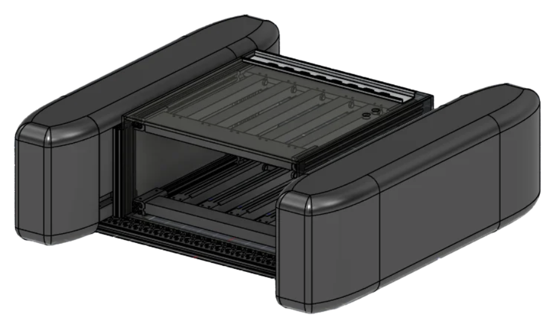

Water treatment through Bioremediation
Care for the water that feeds us.
Thaloss is a self-navigating, solar-powered catamaran that keeps fish ponds and lakes oxygenated and clean, using a living biofilm instead of chemicals and a monitoring app instead of manual rounds.
“Hope for the best, prepare for the worst.”
